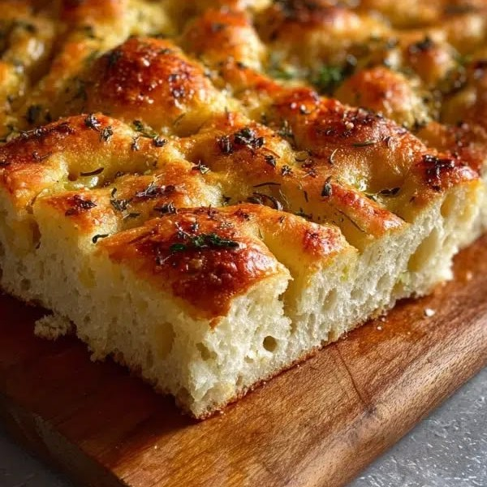
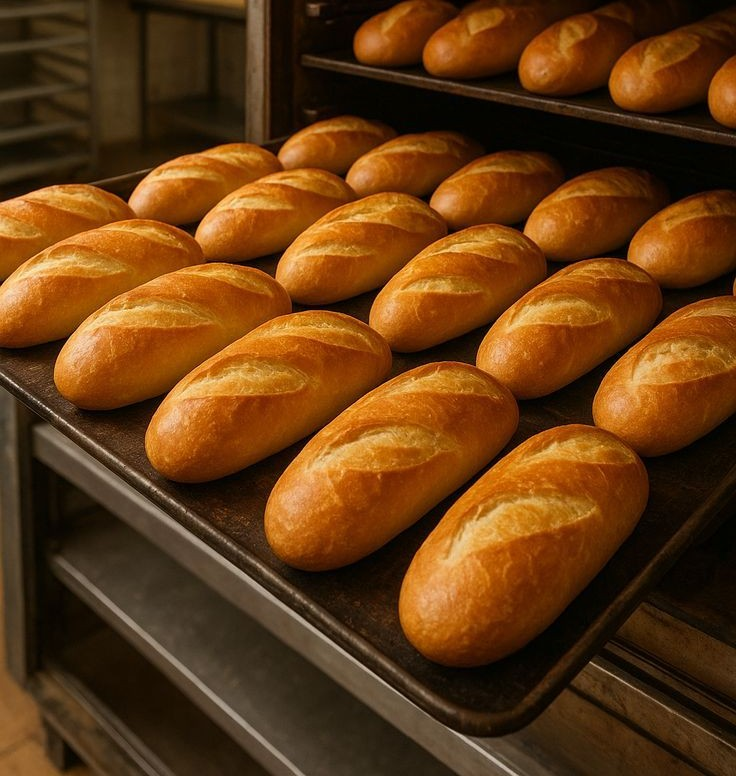
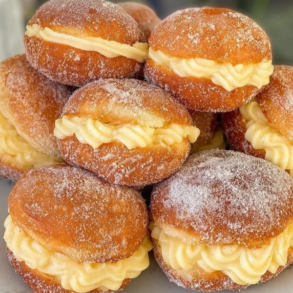

Padaria Trigo & Tempo
Padaria artesanal que combina tradição e cuidado no preparo, oferecendo pães frescos, sabor marcante e um ambiente acolhedor para o dia a dia.
Descubra o sabor de cada momento.

Foccacia
Pão italiano artesanal de massa macia, crosta levemente crocante e coberto com ingredientes selecionados.

Pão Francês
Fresquinho e assado diariamente, com casca dourada e crocante e miolo macio, ideal para o café da manhã ou da tarde.

Sonho
Massa leve e fofinha, recheada com um delicioso creme e finalizada com açúcar, trazendo o sabor das tradicionais padarias.
SOBRE A TRIGO & TEMPO
Feito com carinho, servido com sabor.
Na Trigo & Tempo, cada receita é preparada com dedicação, tradição e ingredientes cuidadosamente selecionados para garantir qualidade em cada detalhe. Nosso compromisso é oferecer pães artesanais sempre fresquinhos, doces irresistíveis, salgados saborosos e um café preparado na hora para tornar qualquer momento mais especial.
Onde nos encontrar?
Será um prazer receber você em nossa padaria! Venha nos visitar, faça sua encomenda ou peça pelo delivery. Estamos sempre prontos para atender com qualidade e praticidade.
- Endereço: Rua Exemplo, 123 – Centro
- Telefone: (85) 0000-0000
- Seg. a Sáb.: 6h às 20h | Dom.: 6h às 13h